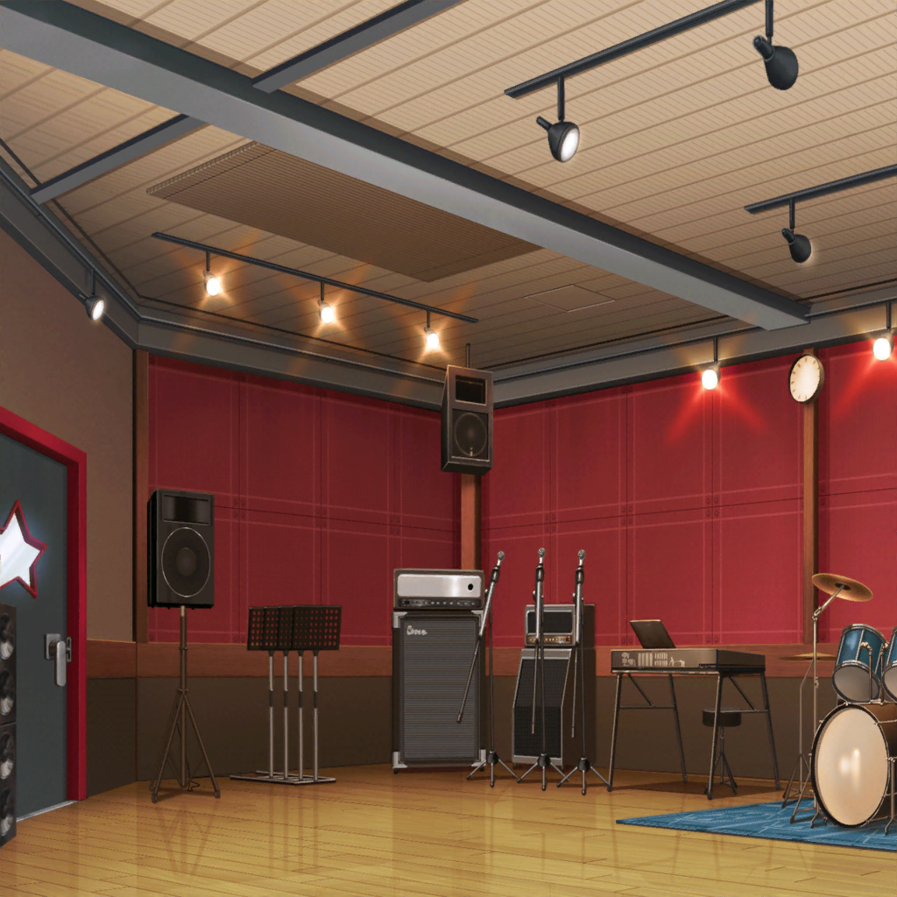

スタジオ 受付
友希那
予約していた湊です
スタジオスタッフ
はい、湊さんですね。お部屋はCスタジオです
スタジオスタッフ
今、機材のレンタル半額キャンペーンを
やっているんですよ。
これ、レンタルできる機材のリストです。何か借りてみませんか？
友希那
へぇ……いろいろあるのね。
マイクにギターにエフェクターに……
あこ
あっ、ドラムのシンバルもいっぱい種類あるー！
燐子
電子ピアノに……シンセサイザーもあるんですね……
紗夜
ギターもベースも、相当な数が用意されているのね。
ずっとこのスタジオに通っていたのに知らなかったわ
スタジオスタッフ
うちはライブハウス併設のスタジオだから、品揃えはいいんです。
楽器は定番のものから変り種までそろっているので、
お試しにはぴったりですよ
スタジオスタッフ
リストはお渡ししますね。
もし借りたいものがあったら、
スタジオの中にある電話から呼び出してください
友希那
わかりました

スタジオ
友希那
さぁ、始めましょうか
紗夜・燐子・あこ
はい！
友希那
……何から始めようかしら
紗夜・燐子・あこ
えっ！？
紗夜
練習内容、決まっていないんですか？
友希那
いえ、やりたいことは決まっているのだけど、
段取りはあまり考えていなかったわ……
少し待って、考えるから
友希那
……
友希那
……そうね、
新曲のコード進行を決めてきたから、
まずはメロディを決めたいわね
紗夜
では、それをベースに考えてみましょう
燐子・あこ
はいっ！
１０分後
友希那
……
紗夜
～♪
燐子
～♪
あこ
（友希那さんはマイクの設定ずっといじってるし、
紗夜さんは自由に音出してる……
りんりんは同じフレーズだけひたすら繰り返してるし……）
あこ
（一緒に演奏したいのに！）
あこ
あ、あの！
友希那
なに？
あこ
せっかく集まってるんだし、
一緒にメロディ考えながら演奏しませんかっ！？
なんか……みんなバラバラで、個人練習みたいですっ
友希那
……確かにあこの言う通りね。全員で練習しましょうか。
紗夜、どうやってメロディを決めていくのがいいかしら
紗夜
そうですね……
……
……すぐに浮かびませんね
友希那
そう……
あなたたち、何かいい案ないかしら？
あこ
はい！ じゃあ、あこ、提案があります！
さっき受付の人が言ってた機材、借りてみませんかっ？
紗夜
機材？ 何を借りたいの？
あこ
あこ、ドラムのハイハット変えてみたいです！
次の新曲は、シンバルの音を長く響かせてみたいんですよっ
燐子
わたしは……シンセサイザー……使って……みたいです……
電子音……入れてみると……新しい音になるし……
いいメロディも……思い浮かぶかも……
紗夜
湊さん、どう思いますか？
友希那
悪くないわね。
新曲に合わせて、新しい音を模索してもいいかもしれないわ
紗夜
借りるのであれば、
私は新しいエフェクターを試してみたいですね。
今よりもっと音を歪ませるとどうなるのか、確かめてみたいです
友希那
なるほどね。せっかくだから、使ってみましょうか
友希那
紗夜、あこ、燐子。このリストの中から好きな機材を選んで
あこ
やったー！ んー……どれにしようかな。迷っちゃうな～！
りんりんは決まった？
燐子
えっと……わたしは……これにしようかな……
あこ
うんうん、いいと思うよ！
あこは……よし、これだっ！
友希那さん、決まりました！
紗夜
では、私はこちらにしましょう
友希那
それじゃ、燐子、受付に電話お願いできる？
電話はドアの隣に備え付けてあるわよ
燐子
わ、わたしですか！？
は、はい……
燐子
（電話するの……緊張するな……ドキドキしてきちゃった……
まずは……大きく深呼吸して……）
燐子
すー……はー……
あこ
りんりん、何してるの？
燐子
あ、あこちゃん……わたし、電話するの……苦手だから……
深呼吸して、落ち着こうと……思って……
あこ
そっか！ がんばって、りんりん！
燐子
うん……！
燐子
（落ち着いて……落ち着いて、わたし……！）
燐子
あっ……も、もしもし……きききき機材の……レンタルを……
は……はい、そうです……お願いします……
燐子
ふー……
あこ
りんりん、うまく話せた？
燐子
うん……話せたよ、あこちゃん……
すぐ……持ってきてくれるって……
友希那
じゃあ、届くのを待っていましょうか
５分後
スタジオスタッフ
お待たせしました～
ご注文のウクレレとパーカッションです！
友希那・紗夜・あこ・燐子
えっ！？
燐子
わ、わたし……ドラムのハイハットと……シンセサイザーと……
ギターエフェクターを……
頼んだつもり……だったんですが……
スタジオスタッフ
あれ？ 違いますか？
ウクレレとパーカッションって聞こえた気がしたんですが
紗夜
この楽器だと……
ハワイアンのメロディができるわね……
あこ
……やります？ ハワイアン……
友希那
……やらないわ
燐子
……